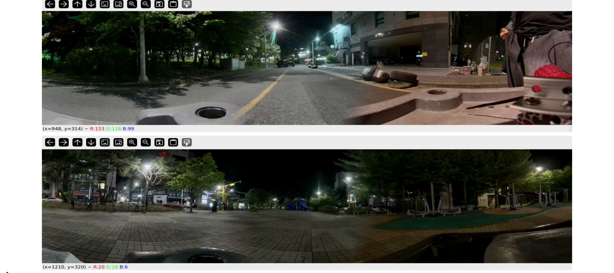

저조도 파노라마 센서팩 제작
9.1MP(4K) 카메라 3대를 273° 초광각으로 배치하고, 스테레오 카메라 캘리브레이션 기반의 무이음새 파노라마 생성과 저조도 특화 영상 처리를 Jetson 온보드에서 실시간으로 수행하는 센서팩 및 시스템 개발.
Overview
본 과제는 (주)에이브노틱스(Avenotics)와 함께 수행한 과제로, 스테레오 카메라 캘리브레이션 기반의 파노라마 생성과 저조도 환경에 특화된 영상 처리를 온보드에서 수행하는 센서팩 및 시스템을 개발하는 것을 목표로 한다.
하드웨어는 9.1MP(4K) 카메라 3대를 273° 초광각으로 배치하고 카메라 config를 튜닝해 저조도 성능을 강화하였으며, PoE 단일 케이블로 전원·통신을 통합한 형태로 설계하였다. 소프트웨어는 인접 카메라의 화각 오버랩을 고려한 무이음새 스티칭 파이프라인을 구성하고, grid_sample·lerp 등 다중 연산을 단일 융합 CUDA 커널로 통합하여 Jetson Nano Orin 온보드에서 실시간 파노라마 합성과 AI 인식이 가능하도록 최적화하였다.
Approach
- 스테레오 캘리브레이션: ChArUco 기반 다중 카메라 내/외부 파라미터를 정밀 추정(재투영 오차 0.5px 이내)하고, 인접 카메라 간 화각 오버랩을 고려한 배치를 검증하여 파노라마 합성을 위한 정합 정확도 확보
- 파노라마 생성: 캘리브레이션으로 산출한 경계선(seam)을 기준으로 다중 영상을 워핑·매핑해 스티칭 맵을 구성하고, Jetson 온보드에서 미리 구한 경계선 값으로 정합하는 방식으로 최적화하여 실시간 파노라마 생성
- 저조도 온보드 처리: 저조도 환경에 특화된 영상 처리 알고리즘을 적용하고, grid_sample·lerp 다중 연산을 단일 융합 CUDA 커널로 통합해 Jetson Nano Orin 온보드에서 실시간 동작하도록 최적화
- GPU 활용으로 처리 속도를 개선하고 파노라마 이음새를 보정하였으며, RTK 적용으로 0.0Xm급 GPS 정확도를 확보

Methods & Tech
Results
9.1MP(4K)·273° 화각의 센서팩에서 grid_sample·lerp 등 8개 CUDA 연산을 단일 융합 커널로 통합해 Jetson Nano Orin 온보드에서 15FPS 실시간 파노라마 합성을 달성하였다. 스테레오 캘리브레이션의 재투영 오차는 0.5px 이내였으며, RTK를 적용해 0.0Xm급 GPS 정확도를 확보하였다. 향후 보드 업그레이드 시 고정 경계선 대신 실시간 seam 매칭 알고리즘을 적용하면 더 자연스러운 스티칭이 가능할 것으로 기대된다.